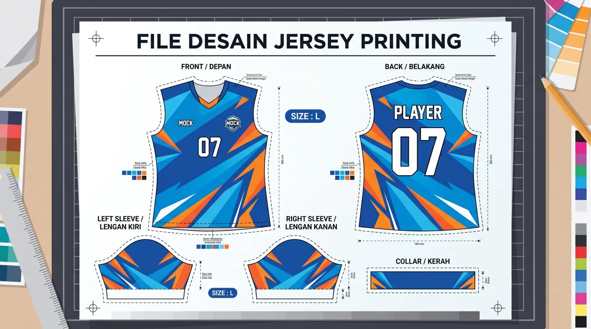

File yang siap produksi mengurangi revisi dan membantu menjaga posisi logo, motif, nama, serta nomor. Artikel ini membahas aspek yang perlu diperiksa agar keputusan Anda lebih tepat, baik untuk seragam komunitas, tim olahraga, sekolah, maupun kebutuhan acara.
Dalam memilih layanan jersey printing, sebaiknya pertimbangkan bukan hanya tampilan desain, tetapi juga fungsi bahan, ketepatan ukuran, dan kesiapan data pesanan. Untuk gambaran menyeluruh, baca panduan printing jersey Bandung.
Gunakan ukuran dan pola yang benar
Minta template panel jersey dari penyedia produksi sebelum menyusun desain final. Area depan, belakang, lengan, kerah, dan kampuh jahitan perlu diperhitungkan agar elemen penting tidak terpotong.
Untuk memperjelas keputusan sebelum produksi, lihat juga tips desain jersey untuk tim. Informasi tersebut membantu menyesuaikan pilihan dengan kebutuhan tim dan kesiapan pesanan.
Perhatikan resolusi dan format
Logo berbasis vektor lebih mudah diskalakan tanpa pecah. Untuk gambar raster, gunakan resolusi memadai pada ukuran cetak aktual. Simpan file kerja beserta font atau ubah teks menjadi outline bila disepakati.

Jika ingin memeriksa detail yang berkaitan, baca tahapan produksi jersey printing. Informasi tersebut membantu menyesuaikan pilihan dengan kebutuhan tim dan kesiapan pesanan.
Persetujuan akhir sebelum produksi
Cek ejaan nama, nomor punggung, penempatan sponsor, warna, dan varian ukuran. Pastikan versi desain yang disetujui jelas agar tidak tertukar dengan file revisi sebelumnya.
Sebagai langkah lanjutan yang praktis, gunakan panduan checklist sebelum memesan jersey custom. Informasi tersebut membantu menyesuaikan pilihan dengan kebutuhan tim dan kesiapan pesanan.
Spesifikasi file sebelum diserahkan
Ukuran dan pola
Gunakan ukuran kerja yang disepakati dengan penyedia produksi. Jangan memaksakan satu gambar datar sebagai pola jadi tanpa memeriksa bentuk panel.
Format file
File vektor memudahkan pengaturan logo dan teks. Jika menggunakan gambar raster, pastikan resolusinya cukup pada ukuran cetak sebenarnya.
Warna dan font
Cantumkan referensi warna, sertakan font atau ubah teks menjadi outline setelah ejaan disetujui, serta simpan salinan yang masih dapat diedit.
Pemeriksaan desain personal pemain
Nama dan nomor
Buat tabel master nama, nomor, ukuran, dan jumlah. Cocokkan tabel dengan desain satu per satu sebelum final.
Penempatan sponsor
Pastikan jarak logo sponsor terhadap jahitan, kerah, dan nomor tidak menimbulkan tabrakan visual.
Mockup depan belakang
Periksa kedua sisi, lengan kanan-kiri, dan area samping. Jangan menyetujui produksi hanya dari tampak depan.
Serah terima dan persetujuan file
Simpan versi final
Gunakan nama berkas dan tanggal versi yang jelas agar vendor tidak mencetak file revisi lama.
Konfirmasi batas revisi
Tanyakan kapan perubahan masih mungkin dilakukan. Revisi setelah tahap cetak dimulai dapat menambah biaya atau waktu.
Langkah praktis sebelum menentukan pilihan
Gunakan panduan ini sebagai titik awal, lalu sesuaikan dengan aktivitas, anggaran, kebutuhan desain, dan jumlah anggota tim. Jika terdapat spesifikasi khusus, komunikasikan sejak awal agar solusi yang ditawarkan tidak hanya terlihat menarik di gambar tetapi juga sesuai saat digunakan.
Untuk kebutuhan produksi di Bandung, pelajari juga panduan printing jersey Bandung yang menjelaskan pilihan bahan, teknik sublimasi, serta alur pemesanan. Anda juga dapat mengenal layanan jersey printing dari Zipzip dan mendiskusikan detail proyek secara langsung.
Pemeriksaan file sebelum diserahkan ke produksi
Simpan file kerja dalam format yang dapat diedit dan sertakan ekspor pratinjau untuk persetujuan. Gunakan logo resolusi tinggi atau format vektor jika tersedia. Hindari mengambil logo kecil dari tangkapan layar karena tepi grafis dapat pecah ketika diperbesar.
Tentukan ukuran dan posisi logo, nama, serta nomor berdasarkan pola produksi, bukan hanya mockup datar. Sertakan kode warna referensi dan beri catatan bahwa warna cetak pada kain dapat berbeda dari tampilan monitor.
Susun folder final yang jelas: master desain, aset logo, daftar nama-nomor-ukuran, dan satu gambar mockup yang disetujui. Beri nomor versi agar file lama tidak tertukar dengan revisi terakhir.
Untuk membandingkan pilihan secara menyeluruh, baca panduan printing jersey Bandung dan lihat layanan jersey printing Zipzip.
Mulai dari pola panel, bukan gambar kaos datar
File desain untuk jersey full printing perlu menyesuaikan pola potong yang digunakan produsen. Mockup kaos datar dapat membantu presentasi, tetapi tidak selalu memuat area lipatan, sambungan, dan toleransi jahit. Mintalah template panel depan, belakang, lengan, serta kerah sesuai model yang dipesan. Tempatkan elemen penting jauh dari batas potong dan periksa apakah motif yang menyambung masih masuk akal ketika dijahit. Cara ini mengurangi revisi mendadak saat file sudah siap dicetak.
Vektor dan bitmap punya fungsi berbeda
Logo, teks, garis, dan nomor pemain sebaiknya disimpan dalam format vektor bila memungkinkan karena mudah diskalakan tanpa pecah. Foto atau tekstur raster membutuhkan resolusi cukup pada ukuran cetak akhir. Jangan menganggap file berukuran besar otomatis tajam; gambar kecil yang diperbesar tetap dapat terlihat buram. Hindari mengirim logo hasil tangkapan layar dengan latar putih jika tersedia versi asli. Tanyakan format file kerja yang diterima vendor, termasuk apakah font harus diubah menjadi outline.
Mengatur area aman dan toleransi potong
Tepi panel jersey membutuhkan ruang untuk jahitan dan penyesuaian pola. Logo kecil yang diletakkan terlalu dekat ketiak, bahu, atau bawah baju berisiko terpotong atau bergeser secara visual. Buat area aman yang disepakati dengan vendor; ukurannya mengikuti pola produksi, bukan angka universal yang bisa diterapkan ke semua model. Untuk garis geometris yang melewati sambungan, gunakan mockup tiga dimensi atau sampel jahit agar ekspektasi realistis. Dokumentasikan bagian yang harus presisi dan bagian yang masih bisa ditoleransi.
Warna layar bukan jaminan warna cetak
Perangkat berbeda menampilkan warna dengan kecerahan dan profil yang berbeda. Saat menyerahkan desain, tandai warna identitas tim dan sertakan referensi yang konsisten. Jika akurasi warna sangat penting, tanyakan opsi proof pada kain yang akan digunakan. Hindari revisi warna melalui foto yang diambil di bawah pencahayaan tidak netral. Keputusan final sebaiknya dicatat pada satu versi file dengan tanggal atau nomor revisi sehingga operator tidak salah memakai versi lama.
Menyusun data nama dan nomor pemain
Personalisasi adalah sumber kesalahan yang sering luput dari pemeriksaan grafis. Buat tabel berisi nama yang akan dicetak, nomor, ukuran, dan jumlah; gunakan ejaan serta kapitalisasi final. Periksa nomor ganda jika aturan tim mengharuskannya unik. Cocokkan tabel dengan mockup belakang jersey dan pastikan nama panjang tidak melampaui ruang desain. Jika ada perubahan anggota, revisi daftar secara terpusat dan kirim satu versi final, bukan potongan pesan yang tersebar.
Memilih tipografi yang tetap terbaca
Huruf tipis atau sangat dekoratif mungkin menarik di monitor tetapi sulit dibaca dari jarak lapangan. Uji nama dan nomor pada ukuran nyata, termasuk nama terpanjang dalam tim. Periksa kontras terhadap motif latar dan hindari menaruh teks di atas area grafis yang terlalu ramai. Untuk nomor punggung, bentuk angka yang tegas biasanya lebih mudah dikenali. Pastikan ukuran serta posisi nomor mengikuti kebutuhan cabang olahraga atau ketentuan kompetisi jika ada.
Checklist sebelum menekan tombol kirim
Periksa dimensi panel, format file, resolusi elemen raster, warna dasar, font, logo, nama, nomor, dan posisi sponsor. Pastikan file yang diserahkan sama dengan preview yang telah disetujui. Jika ada beberapa model ukuran atau potongan, tanyakan apakah perlu adaptasi desain per ukuran. Simpan salinan file sumber dan file final agar revisi dapat dilacak. Untuk pemahaman alur berikutnya, baca tahapan produksi jersey printing.
Alur persetujuan yang menghindari revisi berulang
Tentukan satu koordinator yang mengumpulkan masukan dari seluruh anggota tim. Vendor dapat mengirim mockup, lalu koordinator mengembalikan satu daftar revisi yang sudah disepakati. Setelah revisi terakhir, minta konfirmasi tertulis atas desain dan data personalisasi. Jika ada perubahan setelah persetujuan, tanyakan dampaknya pada biaya dan jadwal. Proses sederhana ini jauh lebih aman dibanding banyak orang mengirim instruksi berbeda melalui beberapa kanal percakapan.
Pertanyaan yang sering muncul
Mulai dari pola panel, bukan gambar kaos datar?
File desain untuk jersey full printing perlu menyesuaikan pola potong yang digunakan produsen. Mockup kaos datar dapat membantu presentasi, tetapi tidak selalu memuat area lipatan, sambungan, dan toleransi jahit.
Vektor dan bitmap punya fungsi berbeda?
Logo, teks, garis, dan nomor pemain sebaiknya disimpan dalam format vektor bila memungkinkan karena mudah diskalakan tanpa pecah. Foto atau tekstur raster membutuhkan resolusi cukup pada ukuran cetak akhir.
Mengatur area aman dan toleransi potong?
Tepi panel jersey membutuhkan ruang untuk jahitan dan penyesuaian pola. Logo kecil yang diletakkan terlalu dekat ketiak, bahu, atau bawah baju berisiko terpotong atau bergeser secara visual.
Artikel terkait yang dapat membantu
- Bikin Jersey Desain Sendiri Bandung
- Tips Desain Jersey Tim: Warna, Logo, Nama, dan Nomor Punggung
- Tahapan Proses Produksi Jersey Printing dari Desain hingga Finishing
Masih ada pertanyaan tentang spesifikasi atau kebutuhan tim? Hubungi Zipzip untuk membahas opsi yang sesuai dengan desain dan jadwal Anda.
Bacaan lanjutan untuk perencanaan jersey
Tahap berikutnya bisa dipelajari melalui panduan yang saling melengkapi berikut.